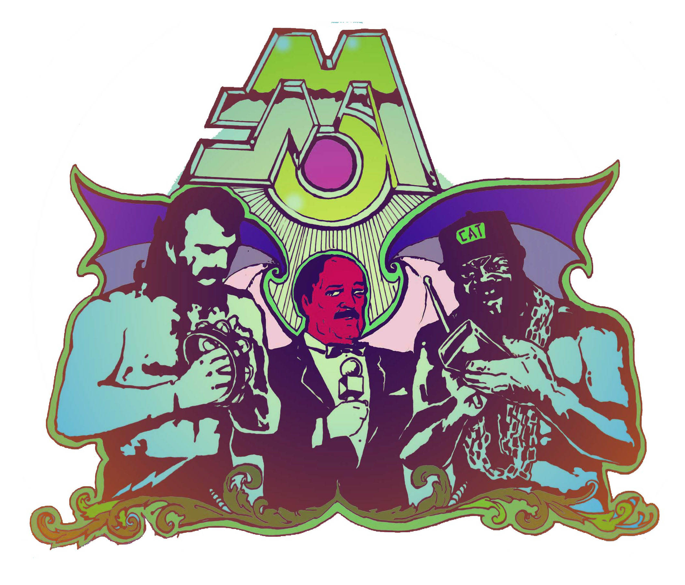

The Mean Jean Oaks interview at 50 third and 3rd Music website
2014-06-01: Black Bear Bar with Erastratus and Fuck Your Birthday
2014-03-30: Acheron with Bleed the Pigs, Bezoar, Thera Roya
2013-08-21: The Flat
2013-05-30: Ella Lounge
2011-08-25: St. Vitus
2011-07-??: Tommy's Tavern
2011-06-22: CoCo 66
2011-05-??: The National Underground